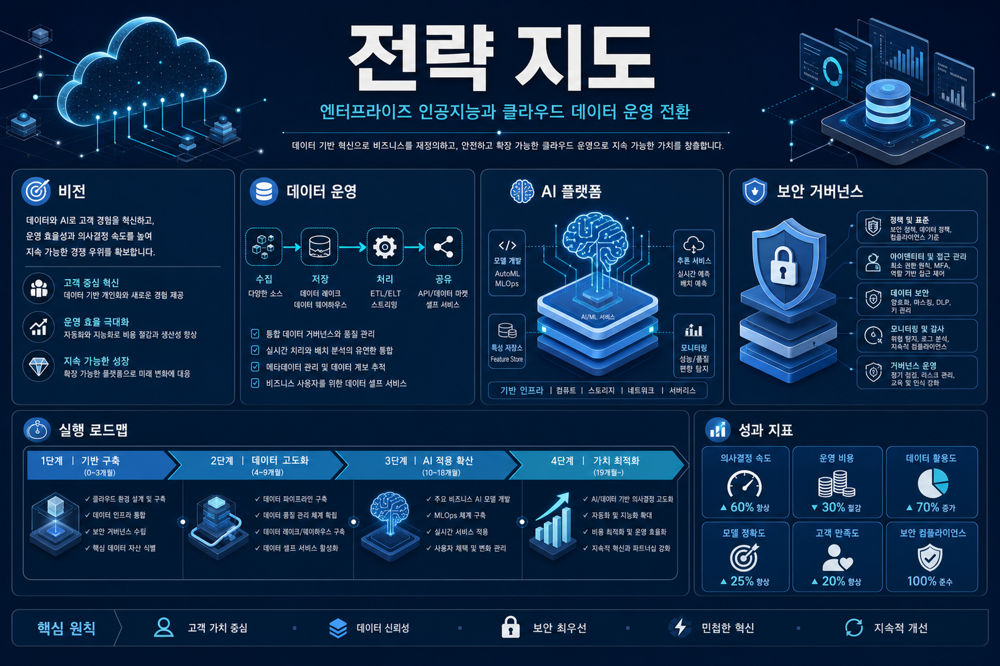
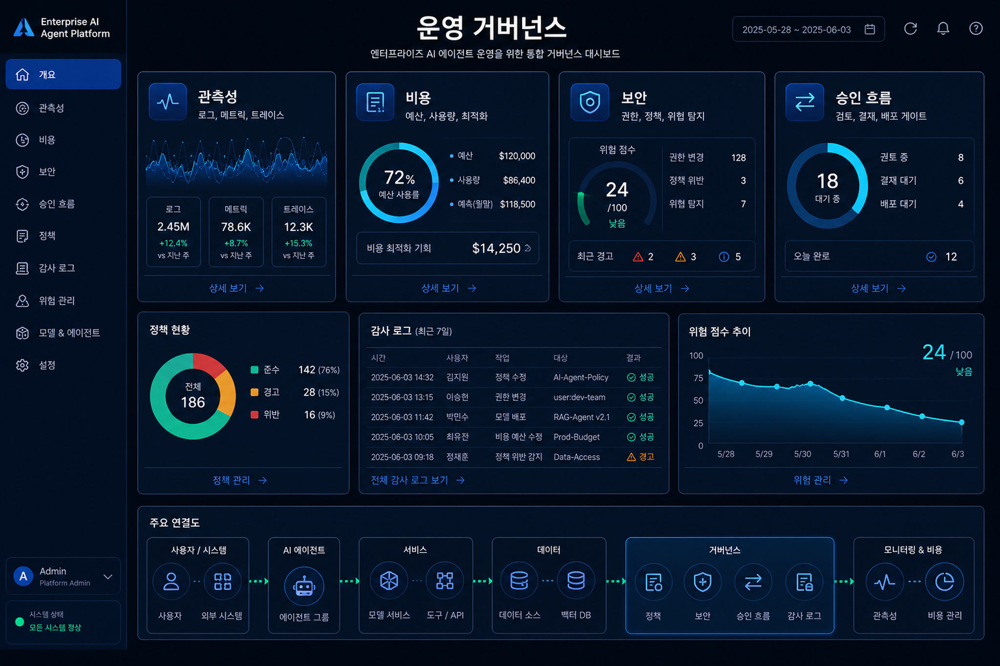
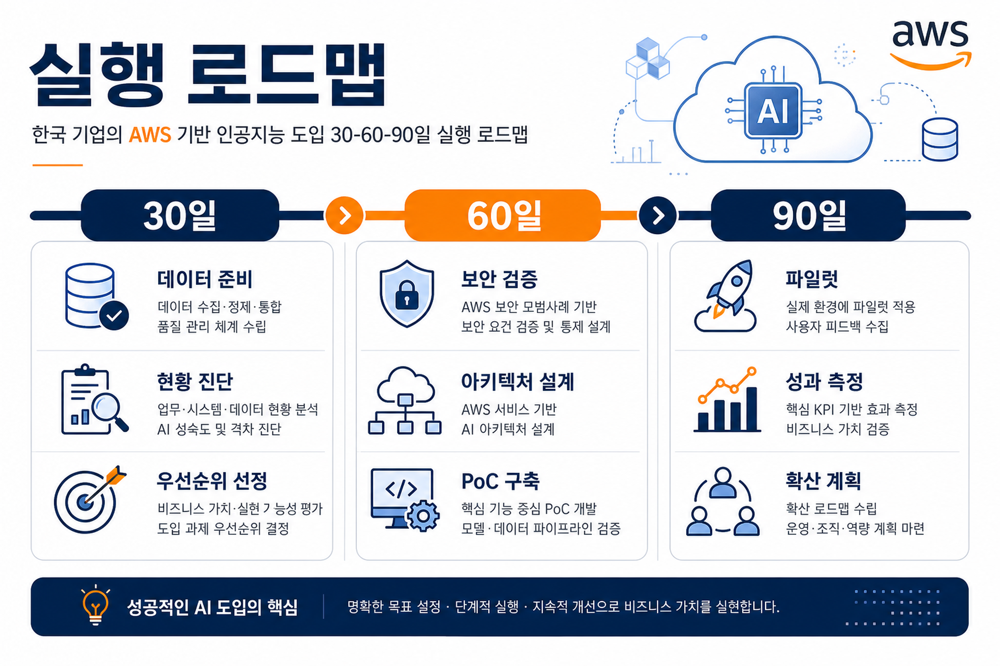

아마존웹서비스 News Blog · 2026-06-04
아마존 코그니토 다중 리전 복제로 애플리케이션 복원력 강화
아마존 코그니토가 다중 리전 복제와 고객 관리형 키 지원을 제공하면서, 인증 계층도 고가용성·암호화 통제 설계 대상이 되었습니다.
- 인증 서비스의 복원력은 에이전트·마이크로서비스·자동화 계정 확산에 따라 핵심 운영 리스크가 되었습니다.
- 주요 기술: 아마존 코그니토, 고객 관리형 키, 다중 리전 복제
세 개의 아마존웹서비스 공식 블로그를 기준으로 신규 글을 수집하고, 한국 기업의 실행 전략과 거버넌스 관점으로 재구성했습니다.

아마존웹서비스 News Blog · 2026-06-04
아마존 코그니토가 다중 리전 복제와 고객 관리형 키 지원을 제공하면서, 인증 계층도 고가용성·암호화 통제 설계 대상이 되었습니다.
아마존웹서비스 Machine Learning Blog · 2026-06-04
아마존 베드록 워크로드가 늘어날수록 할당량, 모델 사용량, 장애 징후, 비용을 선제적으로 감시하는 운영 자동화가 중요해집니다.
아마존웹서비스 Machine Learning Blog · 2026-06-04
표형 데이터 예측 전용 파운데이션 모델이 세이지메이커 점프스타트에 제공되면서, 정형 데이터 기반 예측 업무의 실험 속도가 빨라질 수 있습니다.
아마존웹서비스 Machine Learning Blog · 2026-06-04
SOCI 인덱스는 대용량 컨테이너 이미지를 필요한 부분부터 가져오게 해 학습·추론 환경의 시작 지연과 대기 비용을 줄이는 접근입니다.
아마존웹서비스 Machine Learning Blog · 2026-06-04
지도 미세조정과 직접 선호 최적화를 결합해 에이전트가 올바른 도구를 선택하고 매개변수를 안정적으로 구성하도록 개선하는 방법을 제시합니다.
아마존 베드록, 세이지메이커 인공지능, 도구 호출 정확도 주제는 실험 단계의 챗봇을 넘어 운영 가능한 에이전트 체계로 이동하고 있음을 보여줍니다.
표형 데이터 전용 모델과 세이지메이커 점프스타트 조합은 기업 핵심 데이터가 생성형 인공지능 전환의 다음 적용면이 될 수 있음을 시사합니다.
컨테이너 시작 시간, 인증 복원력, 할당량 예측은 사용자 경험과 비용 구조를 좌우하는 운영 지표입니다.

| 서비스·기술 | 관련 글 | 기업 적용 시 확인할 점 |
|---|---|---|
| 아마존 코그니토, 고객 관리형 키, 다중 리전 복제 | 아마존 코그니토 다중 리전 복제로 애플리케이션 복원력 강화 | 인증 서비스의 복원력은 에이전트·마이크로서비스·자동화 계정 확산에 따라 핵심 운영 리스크가 되었습니다. |
| 아마존 베드록, 아마존 클라우드워치, AWS Lambda, AWS Secrets Manager | 아마존 베드록 기반 자율형 인공지능 운영 체계 구축 | 생성형 인공지능 운영은 모델 호출 모니터링을 넘어 할당량 예측, 로그 분석, 대응 자동화를 포함해야 합니다. |
| 아마존 세이지메이커 점프스타트, NEXUS, 아마존 S3, AWS Marketplace | 세이지메이커 점프스타트의 대형 표형 데이터 모델 NEXUS 출시 | 기업 데이터 전략은 문서형 생성 인공지능뿐 아니라 정형 데이터 예측 모델까지 함께 고려해야 합니다. |
| SOCI, 딥러닝 AMI, 딥러닝 컨테이너, 아마존 EC2 | SOCI 인덱스로 딥러닝 컨테이너 시작 시간 단축 | 인공지능 플랫폼 운영에서는 모델 품질만큼 컨테이너 시작 시간, 그래픽처리장치 활용률, 개발 반복 속도가 비용에 영향을 줍니다. |
| 아마존 세이지메이커 인공지능, 지도 미세조정, 직접 선호 최적화 | 세이지메이커 인공지능으로 에이전트 도구 호출 정확도 개선 | 에이전트가 운영 환경에 들어가려면 대화 품질보다 도구 선택 정확도와 워크플로우 실패율을 먼저 측정해야 합니다. |
데이터 위치, 개인정보·망분리 조건, 기존 클라우드 계정 구조, 예산 한도를 먼저 확인합니다.
작은 업무 단위로 파일럿을 실행하고 응답 품질, 지연, 비용, 실패 로그를 계량화합니다.
운영 책임자, 승인 흐름, 장애 대응, 비용 알림, 감사 리포트를 표준 패턴으로 만듭니다.

에이전트와 데이터 계층은 최소 권한, 역할 기반 접근, 비밀정보 분리 저장을 기본값으로 설계해야 합니다.
모델 호출, 검색, 도구 실행, 재시도 비용을 업무 단위로 태깅하고 예산 알림을 연결해야 합니다.
도구 호출 로그와 사용자 승인 기록이 없으면 자동화 성과를 설명하기 어렵습니다. 추적 가능한 실행 흔적을 남겨야 합니다.